一、创意名称与介绍
参赛赛道： 社会服务（主赛道） · 社会公益（附加赛题）
参赛人： 国家特级英文导游窦俊杰入境游工作室 · 产品经理
产品形态： Web端 + H5端 AI对话应用（ChatGPT交互范式）
想解决什么问题
中国入境游市场正迎来历史性政策红利窗口，但导游人才严重短缺——83%的导游年龄集中在30-50岁，22-30岁年轻导游严重断档。与此同时，89%的入境游客为散客，意味着同样一批游客需要N倍数量的导游服务[1]。传统人才培养周期长、成本高，根本无法在2-3年的市场窗口期内填补缺口。如果接待服务跟不上，口碑反噬的速度比政策落地的速度更快。
为什么会想到做这个
国务院2026年6月正式批复《旅游强国建设"十五五"规划》，明确提出要"统筹国内与国际"，"深化旅游领域交流合作"[2]。政策红利已经释放，游客正在回归。我来自窦俊杰工作室——窦老师是国家特级英文导游，从业二十五年，我们团队系统总结了入境游从业者需要构建的"三硬四软"能力体系。这个体系就是我们的专业"大脑"——用它作为知识底座，加上豆包大模型的能力，就能实现一个效果：让外宾游客用自己的母语来了解中国的旅游产品、中国的文化、中国的商品。
大概是什么产品
一句话说清楚：专业导游知识库 + 豆包大模型 = 外宾母语服务系统。
具体来说，系统覆盖Web端和H5移动端双入口。用户界面对标ChatGPT的交互范式，全球用户零学习成本。H5端支持景点现场扫码即用，无需下载App。
能做什么？系统背后是窦老师25年一线从业经历总结的入境游导游知识体系，作为行业专业级别的知识库。能讲解景点，就同样能讲解商家的餐厅、商店、酒店、景区——因为最基础的语料提供后，结合我们和外宾沟通的实战经验，再借助豆包大模型的能力，就可以做到让商家自己用自己的头像、自己的声音，通过我们的系统大脑，来服务来自全球的外宾游客。而且，我们的专业知识库和豆包大模型会不断升级迭代，越来越强。
在语言层面，系统以窦老师25年经验积累的"三硬四软"课程体系为底座，通过大模型能力，能够用中文、英文进行深度讲解，并实时转换为韩语、俄语、马来语、越南语、泰语等多种语言。外宾游客用母语就能了解中国的旅游产品、文化故事、商品特色。
二、目标用户及痛点
核心用户
- 入境散客：来自韩国、俄罗斯、马来西亚、越南、泰国、欧美等国家的自由行游客
- 入境游从业者：需要快速提升多语种服务能力的年轻导游
- 旅游企业：需要降本增效的旅行社、景区、酒店
- 文旅管理部门：需要数据洞察和政策落地的政府机构
使用场景
- 外国游客在景点参观时进行母语实时讲解
- 行前了解目的地文化背景，制定行程
- 行程中遇到问题，随时用母语求助
- 年轻导游利用AI助手快速获得多语种讲解素材
当前痛点
需求从1名导游变成N名导游
22-30岁年轻导游严重断档
培养期的重叠时间
90%内容非网络攻略所载
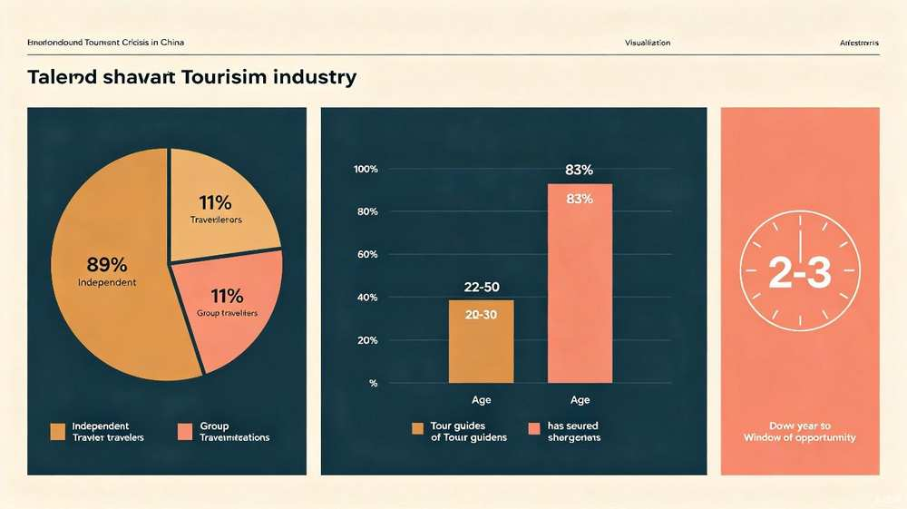
三、产品核心能力
3.1 专业导游知识库 —— 我们的核心"大脑"
本产品最核心的差异化优势，在于知识底座来自窦老师二十五年一线从业经验的系统沉淀——40余万字专业讲解词、400余个知识点、30+独立主题课程，覆盖故宫、长城、中轴线等核心文旅资源。这不是泛泛的旅游信息检索，而是真正的专业导游级讲解内容。
以窦老师团队打造的北京中轴线骑游产品为例——已接待入境游客数千人次，背后沉淀了40多万字讲解词、15个遗产构成要素、400多个知识点。这些内容是AI智能体的核心知识库，确保讲解的深度和准确性远超普通AI对话。更重要的是：能讲解景点，就同样能讲解商家的餐厅、商店、酒店、景区——只要提供基础语料，系统就能生成专业级讲解。
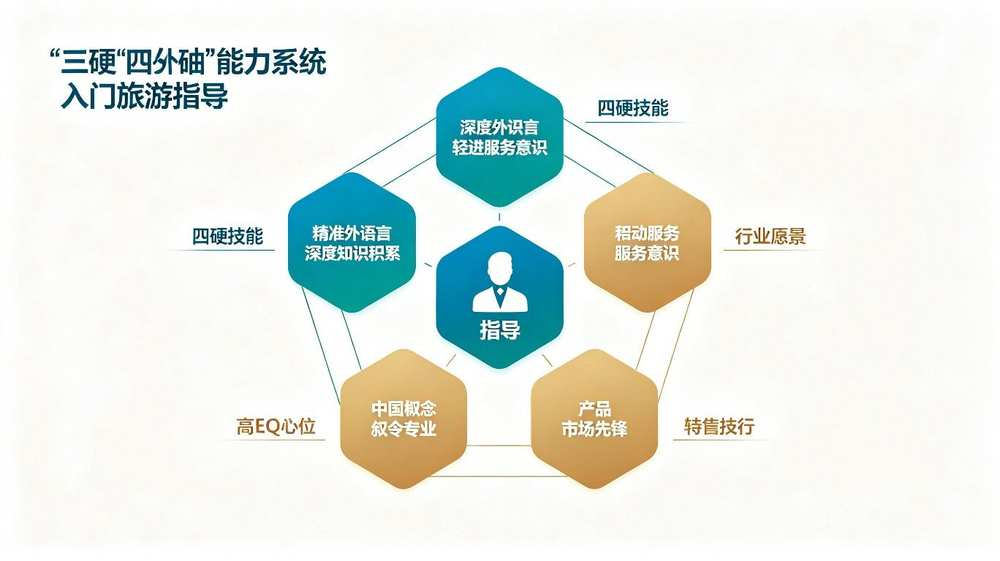
三硬（基本功）
- 精准外语表达：不止于"能沟通"，追求跨文化叙事
- 深厚知识积累：核心景点45分钟深度讲解，90%内容不为网络攻略所载
- 主动服务意识：从"被动响应"到"主动预见"
四软（进阶力）
- 产业大局观：理解行业趋势与政策方向
- 高情商共情：根据游客背景提供个性化服务
- 中国式叙事：用对方熟悉的参照系讲中国故事
- 产品市场开拓：讲解+产品+营销复合型人才
3.2 豆包大模型驱动的多语种对话
专业导游知识库提供行业级语料，豆包大模型提供强大的翻译和生成能力——两者结合，就能实现：外宾游客用自己的母语来了解中国的旅游产品、中国的文化、中国的商品。用户端采用与ChatGPT一致的对话界面，降低外国用户的学习成本。支持的语言覆盖：
Think of it as the Chinese equivalent of St. Peter's Basilica in Vatican — not just architecturally, but symbolically. Just as St. Peter's represents the spiritual center of Catholicism, the Hall of Supreme Harmony embodies the Mandate of Heaven — the divine authority granted to the emperor to rule "All Under Heaven."
3.3 豆包大模型 + 持续进化
专业知识库和豆包大模型会不断升级迭代，越来越强。每一次对话、每一份新语料的投入，都在让系统变得更聪明。这是一个活的知识体系，不是一次性开发完就完了的产品，而是随着使用不断进化的AI大脑。
四、价值与意义
本产品兼具社会公益价值和清晰的商业化路径。核心逻辑就是：专业导游知识库 + 豆包大模型 = 能力，这个能力既服务游客，也服务商家，更服务整个入境游行业。
社会价值：服务旅游强国建设
《旅游强国建设"十五五"规划》明确提出"加快建设旅游强国，让旅游业更好服务美好生活、促进经济发展、构筑精神家园、展示中国形象、增进文明互鉴"[2]。本产品直接响应国家战略，通过AI技术缓解入境游人才短缺，提升中国旅游服务的国际水准。入境游的终点不是风景，是人。AI智能体传承了窦老师"用对方熟悉的参照系来讲中国故事"的叙事方法——不是生硬直译，而是跨文化叙事，让外国游客真正理解中国文化。
行业价值：填补市场缺口
- 即时覆盖多语种需求：无需等待数年的语言培训周期
- 降低行业服务成本：为中小旅行社和景区提供可负担的AI讲解方案
- 赋能年轻导游：作为辅助工具帮助新导游快速掌握专业讲解内容
- 提升中国旅游口碑：确保每一位入境游客获得专业、有温度的母语服务体验
商业价值：四个方向的变现路径
游客端：行前行中全链路服务闭环
来自全球的外宾可以在进入中国之前就开始使用系统——通过邮件建联，提前了解目的地文化、规划行程。到达中国后继续使用，并逐步在系统上完成旅游全链路需求下单：住宿预订、旅游路线查询、特色商品购买等。从"行前种草"到"行中消费"再到"行后口碑"，形成完整的游客服务闭环。
商家端：为国内商家提供AI讲解能力赋能
系统能讲解故宫、长城，同样能讲解商家的餐厅、商店、酒店、景区。导游最大的能力就是把中国的景点、文化、人文按照外宾可以理解的内容进行讲解——而这一能力来自窦老师25年一线经验总结的知识体系。最基础的语料提供后，结合我们和外宾沟通的实战经验及豆包大模型的能力，商家可以获得国家级导游水准的AI讲解服务，让自己的店铺、产品被外国游客真正"看懂"。
定制化专属部署：商家的AI数字代言人
通过豆包大模型的能力，商家可以使用自己的头像、自己的声音来输出讲解内容——打造专属的AI数字代言人。背后的大脑是我们的专业导游知识库，前台呈现的是商家自己的品牌形象。餐厅老板可以用自己的声音用韩语介绍招牌菜，酒店经理可以用自己的形象用俄语介绍客房设施。
从业者端：导游专属AI助手
系统同时面向导游及旅游从业者，支持添加个人专属知识库，叠加我们的"三硬四软"底层能力后，成为每位导游自己的专属AI助手。年轻导游可以快速获得多语种讲解素材，资深导游可以沉淀个人经验形成差异化优势，让每一位从业者都拥有一个"25年经验的特级导游"在身边。
五、创始人介绍
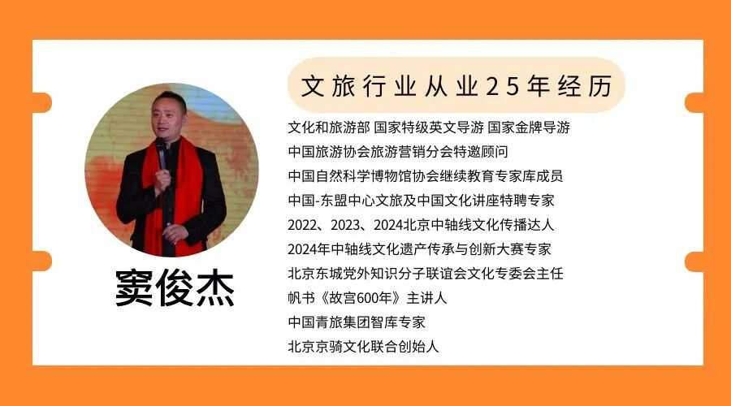
- 文化和旅游部 国家特级英文导游 · 国家金牌导游
- 中国旅游协会旅游营销分会特邀顾问
- 中国自然科学博物馆协会继续教育专家库成员
- 中国-东盟中心文旅及中国文化讲座特聘专家
- 北京市入境游海外推介人，主导撰写《北京市外语导游讲解服务规范 - 英文》
- 帆书《故宫600年》主讲人，出版《全国英语导游实战汇编》
- 北京京骑文化联合创始人，北京东城党外知识分子联谊会文化专委会主任
- 2022、2023、2024连续三年北京中轴线文化传播达人，2024年中轴线文化遗产传承与创新大赛专家
- 中国青旅集团智库专家，2020年首创外语导游"三硬四软"素质模型
- 拥有25年入境游高端带团经验，接待国际政要、海外专业考察团、高端骑行团等各类外宾团队
- 系统梳理北京中轴线等文旅资源400余个知识点，沉淀形成40余万字专业讲解知识库
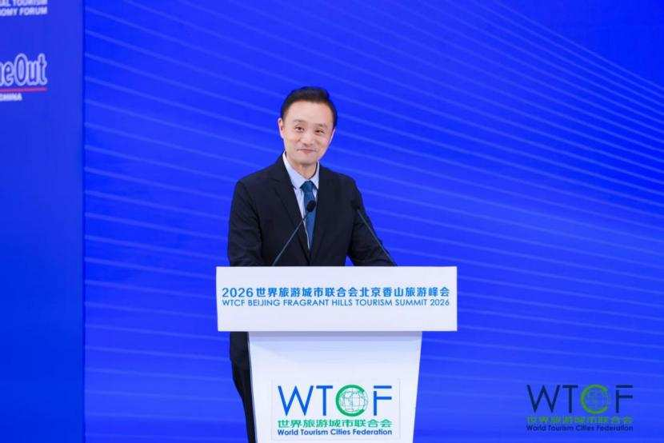
六、工作室介绍
工作室依托窦俊杰原创"三硬四软"素质模型与"40%+40%+20%"能力矩阵体系，打破传统导游培训重语言、轻素养、重理论、轻实战的短板，推动外语导游从景点讲解员向文化体验设计师、中国叙事共情者、旅游产品开拓者转型升级。
四大核心业务板块
- 外语导游精英实训（线下精品课）：覆盖全国17个省市学员
- 三硬四软课程体系（线上音频课）：碎片化系统学习
- 外宾高频话题（线上直播课）：16个核心话题深度拆解
- AI智能体（入境游专属智库工具）：百万字讲解素材封装
产业链合作方向
- 共建外语导游定点培训基地、联合开班授课
- 联合编写培训教材、共建行业服务标准
- 联合开发特色文旅线路、骑行主题产品
- 联合AI数字化文旅融合、跨文化传播IP孵化
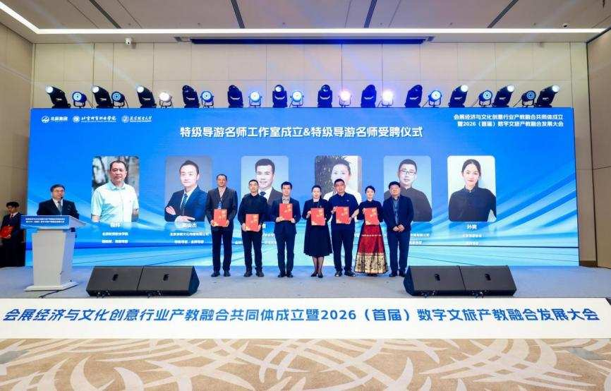
七、方法论与实战成果
8.1 讲解方法论：1/3/10分钟体系
窦老师原创的讲解方法论，按内容深浅和场景搭建标准化的讲解体系：
- 1分钟：高度凝练和总结性话术，迅速告诉外宾"这是什么"以及对方能如何与其关联
- 3分钟：从讲述人自己的认知出发，以"钩子"形式就一个兴趣点进行主观式带入
- 10分钟：为外宾进行内容"深挖"，构筑"这是什么→如何理解→为什么是"的溯源手法
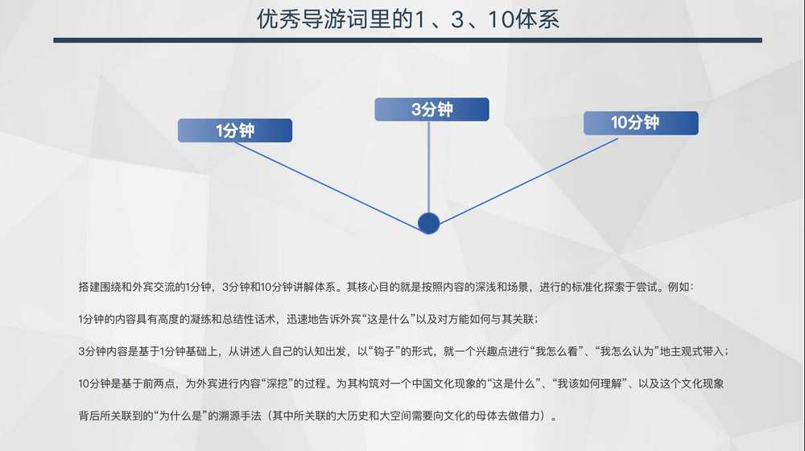
8.2 中国式对外叙事体系
用传承千年的中国文化，结合现代中国理论体系，阐述从古至今的中国实践。导游员需把握叙事立场、叙事逻辑和叙事策略，找准构建中国叙事体系的着力点。
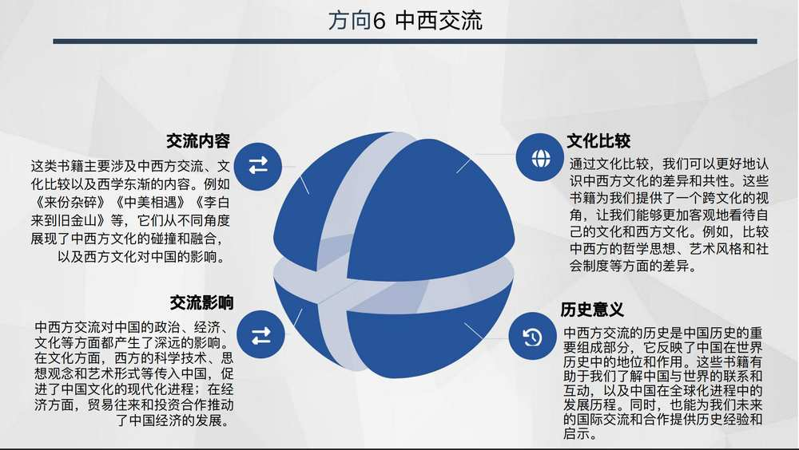
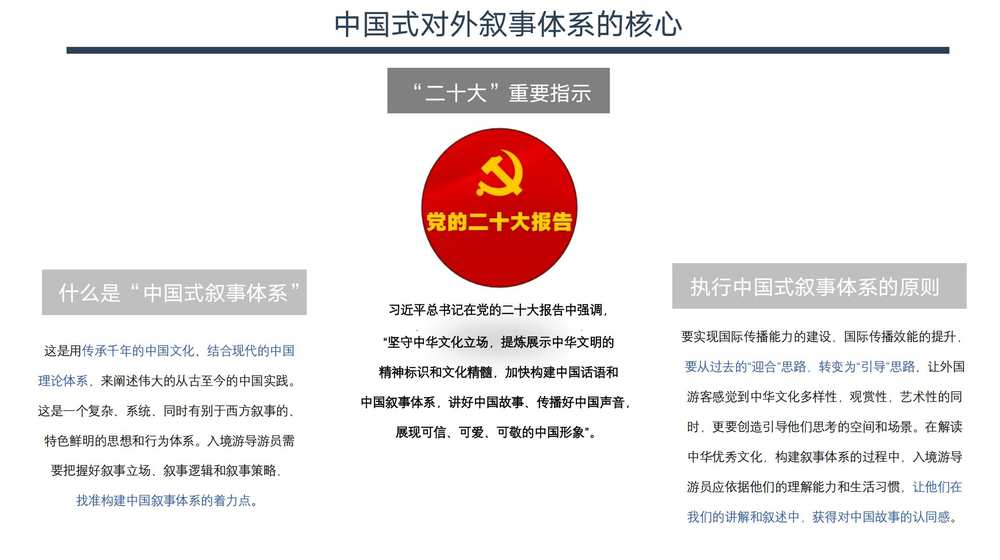
8.3 四年创业数据
其中800人为外国游客
持续增长态势
零投诉记录
400+知识知识点
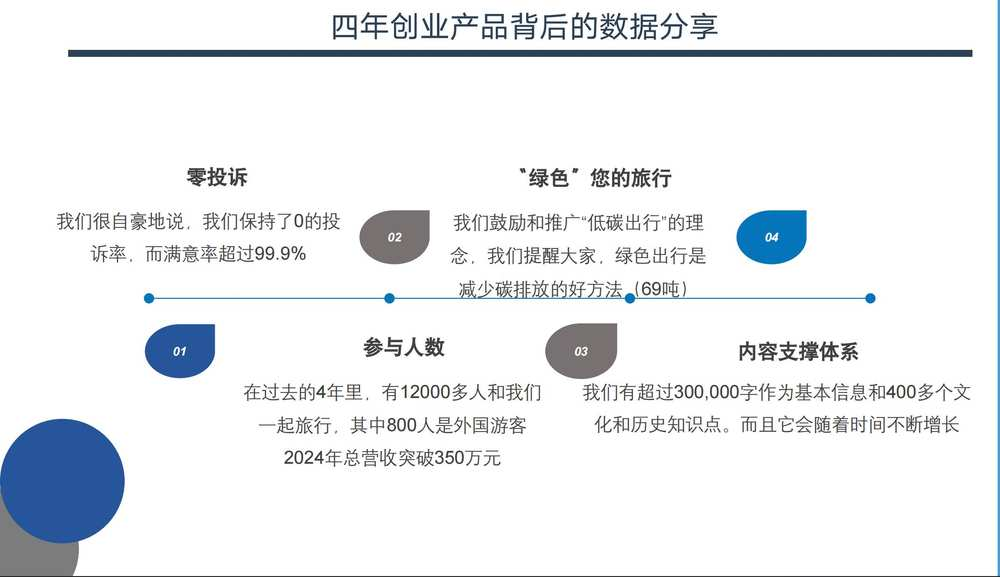
8.4 "讲解+产品+营销"复合型人才实践
窦老师践行"讲解+产品+营销"的复合型人才转型，从导游讲解员到产品经理再到行业推广人的跨越。
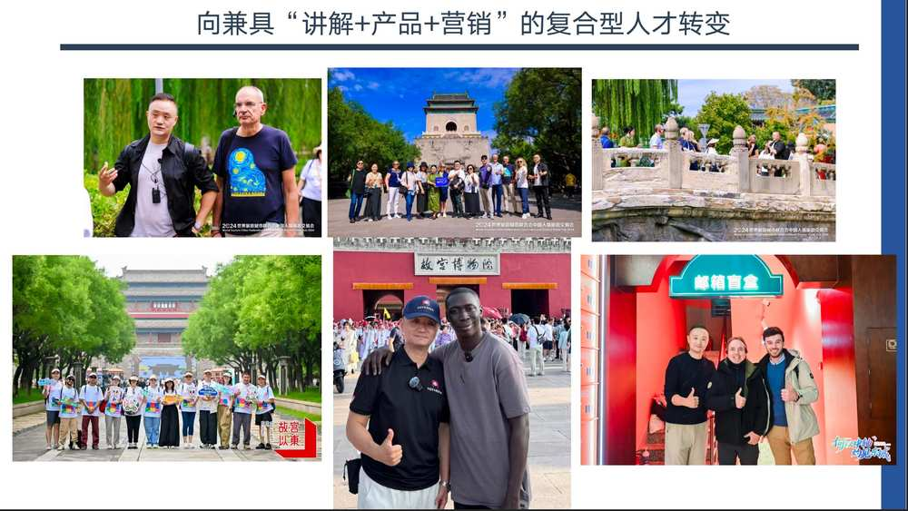
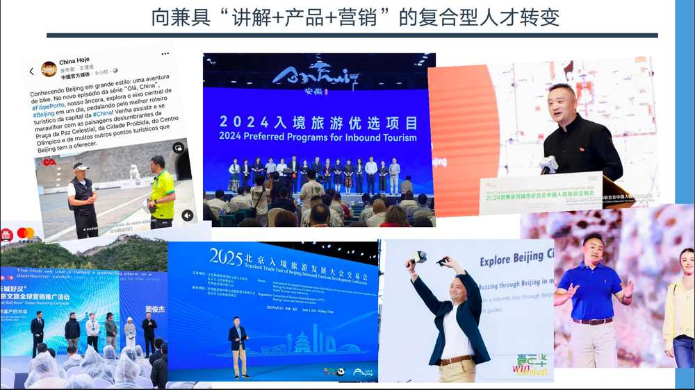
8.5 内容沉淀体系
从故宫概况到明清帝王逸闻，从中国茶道到景泰蓝制作，超过30个独立主题课程，覆盖历史、民俗、建筑、哲学、艺术等跨学科领域。
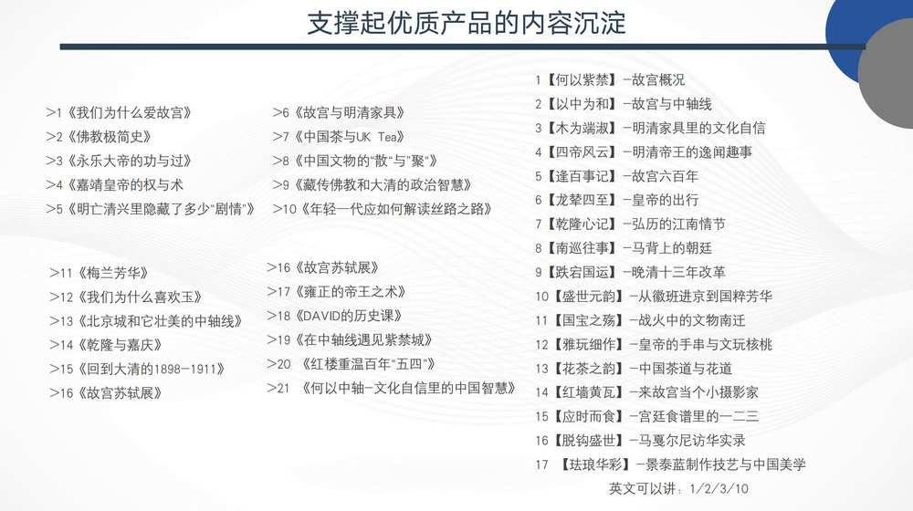
8.6 学术合作与人才培训
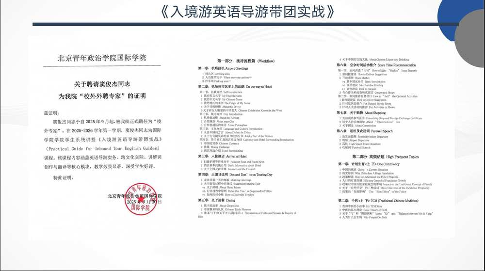